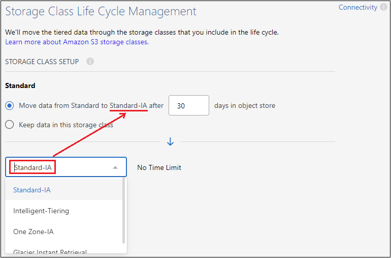
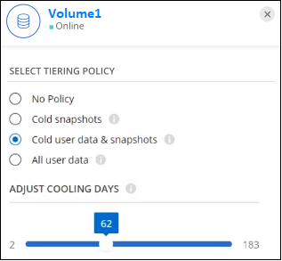

Richiedi modifiche alla documentazione
Richiedi modifiche alla documentazione Modifica questa pagina
Modifica questa pagina Scopri come collaborare
Scopri come collaborareTiering dei dati dai cluster ONTAP on-premise ad Amazon S3
Collaboratori
Liberare spazio sui cluster ONTAP on-premise eseguendo il tiering dei dati inattivi su Amazon S3.
Avvio rapido
Inizia subito seguendo questa procedura. I dettagli di ciascuna fase sono forniti nelle sezioni seguenti di questo argomento.
 Identificare il metodo di configurazione da utilizzare
Identificare il metodo di configurazione da utilizzareScegliere se connettere il cluster ONTAP on-premise direttamente ad AWS S3 tramite Internet pubblico o se utilizzare una connessione diretta VPN o AWS e instradare il traffico ad AWS S3 attraverso un’interfaccia endpoint privata VPC.
 Preparare il connettore BlueXP
Preparare il connettore BlueXPSe si dispone già di un connettore implementato in AWS VPC o on-premise, si è tutti pronti. In caso contrario, sarà necessario creare un connettore per il Tier dei dati ONTAP allo storage AWS S3. Sarà inoltre necessario personalizzare le impostazioni di rete per il connettore in modo che possa connettersi ad AWS S3.
 Preparare il cluster ONTAP on-premise
Preparare il cluster ONTAP on-premiseIndividuare il cluster ONTAP in BlueXP, verificare che soddisfi i requisiti minimi e personalizzare le impostazioni di rete in modo che il cluster possa connettersi ad AWS S3.
 Prepara Amazon S3 come target di tiering
Prepara Amazon S3 come target di tieringImpostare le autorizzazioni per il connettore per creare e gestire il bucket S3. È inoltre necessario impostare le autorizzazioni per il cluster ONTAP on-premise in modo che possa leggere e scrivere i dati nel bucket S3.
 Abilitare il tiering BlueXP sul sistema
Abilitare il tiering BlueXP sul sistemaSelezionare un ambiente di lavoro on-premise, fare clic su Enable (attiva) per il servizio Tiering e seguire le istruzioni per assegnare i dati ad Amazon S3.
 Impostare la licenza
Impostare la licenzaAl termine della prova gratuita, è possibile pagare il tiering BlueXP tramite un abbonamento pay-as-you-go, una licenza BYOL per tiering ONTAP BlueXP o una combinazione di entrambi:
-
Per iscriversi ad AWS Marketplace, "Vai all’offerta BlueXP Marketplace", Fare clic su Subscribe, quindi seguire le istruzioni.
-
Per pagare utilizzando una licenza BlueXP Tiering BYOL, contattaci se devi acquistarne una, quindi "Aggiungilo al tuo account dal portafoglio digitale BlueXP".
Diagrammi di rete per le opzioni di connessione
Esistono due metodi di connessione che è possibile utilizzare per la configurazione del tiering da sistemi ONTAP on-premise ad AWS S3.
-
Connessione pubblica - consente di collegare direttamente il sistema ONTAP ad AWS S3 utilizzando un endpoint S3 pubblico.
-
Connessione privata - utilizza una connessione VPN o AWS Direct e instrada il traffico attraverso un’interfaccia endpoint VPC che utilizza un indirizzo IP privato.
Il seguente diagramma mostra il metodo connessione pubblica e le connessioni che è necessario preparare tra i componenti. È possibile utilizzare un connettore installato in sede o un connettore implementato in AWS VPC.

Il seguente diagramma mostra il metodo private Connection e le connessioni che è necessario preparare tra i componenti. È possibile utilizzare un connettore installato in sede o un connettore implementato in AWS VPC.


|
La comunicazione tra un connettore e S3 è solo per la configurazione dello storage a oggetti. |
Preparare il connettore
BlueXP Connector è il software principale per la funzionalità BlueXP. Per eseguire il Tier dei dati ONTAP inattivi, è necessario un connettore.
Creazione o commutazione di connettori
Se si dispone già di un connettore implementato in AWS VPC o on-premise, si è tutti pronti. In caso contrario, sarà necessario creare un connettore in una di queste posizioni per tierare i dati ONTAP allo storage AWS S3. Non puoi utilizzare un connettore implementato in un altro provider cloud.
Requisiti di rete del connettore
-
Assicurarsi che la rete in cui è installato il connettore abiliti le seguenti connessioni:
-
Una connessione HTTPS tramite la porta 443 al servizio di tiering BlueXP e allo storage a oggetti S3 ("vedere l’elenco degli endpoint")
-
Una connessione HTTPS sulla porta 443 alla LIF di gestione del cluster ONTAP
-
-
"Assicurarsi che il connettore disponga delle autorizzazioni per gestire il bucket S3"
-
Se si dispone di una connessione diretta o VPN dal cluster ONTAP al VPC e si desidera che la comunicazione tra il connettore e S3 rimanga nella rete interna AWS (una connessione privata), è necessario attivare un’interfaccia endpoint VPC su S3. Scopri come configurare un’interfaccia endpoint VPC.
Preparare il cluster ONTAP
I cluster ONTAP devono soddisfare i seguenti requisiti quando si esegue il tiering dei dati su Amazon S3.
Requisiti ONTAP
- Piattaforme ONTAP supportate
-
-
Quando si utilizza ONTAP 9.8 e versioni successive: È possibile tierare i dati dai sistemi AFF o FAS con aggregati all-SSD o aggregati all-HDD.
-
Quando si utilizza ONTAP 9.7 e versioni precedenti: È possibile eseguire il tiering dei dati dai sistemi AFF o dai sistemi FAS con aggregati all-SSD.
-
- Versioni di ONTAP supportate
-
-
ONTAP 9.2 o versione successiva
-
ONTAP 9.7 o versione successiva è necessario se si intende utilizzare una connessione AWS PrivateLink allo storage a oggetti
-
- Volumi e aggregati supportati
-
Il numero totale di volumi a cui è possibile eseguire il tiering BlueXP potrebbe essere inferiore al numero di volumi nel sistema ONTAP. Questo perché i volumi non possono essere suddivisi in livelli da alcuni aggregati. Consultare la documentazione ONTAP per "Funzionalità o funzionalità non supportate da FabricPool".
|
|
BlueXP Tiering supporta i volumi FlexGroup a partire da ONTAP 9.5. Il programma di installazione funziona come qualsiasi altro volume. |
Requisiti di rete del cluster
-
Il cluster richiede una connessione HTTPS in entrata dal connettore alla LIF di gestione del cluster.
Non è richiesta una connessione tra il cluster e il servizio di tiering BlueXP.
-
Per ogni nodo ONTAP che ospita i volumi da tierare è necessario un LIF intercluster. Queste LIF intercluster devono essere in grado di accedere all’archivio di oggetti.
Il cluster avvia una connessione HTTPS in uscita sulla porta 443 dalle LIF dell’intercluster allo storage Amazon S3 per le operazioni di tiering. ONTAP legge e scrive i dati da e verso lo storage a oggetti: Lo storage a oggetti non viene mai avviato, ma risponde.
-
Le LIF dell’intercluster devono essere associate a IPSpace che ONTAP deve utilizzare per connettersi allo storage a oggetti. "Scopri di più su IPspaces".
Quando si imposta il tiering di BlueXP, viene richiesto di specificare IPSpace da utilizzare. È necessario scegliere l’IPSpace a cui sono associate queste LIF. Potrebbe trattarsi dell’IPSpace "predefinito" o di un IPSpace personalizzato creato.
Se si utilizza un IPSpace diverso da quello predefinito, potrebbe essere necessario creare un percorso statico per accedere allo storage a oggetti.
Tutte le LIF di intercluster all’interno di IPSpace devono avere accesso all’archivio di oggetti. Se non è possibile configurare questa opzione per l’IPSpace corrente, è necessario creare un IPSpace dedicato in cui tutte le LIF dell’intercluster abbiano accesso all’archivio di oggetti.
-
Se si utilizza un endpoint dell’interfaccia VPC privata in AWS per la connessione S3, per utilizzare HTTPS/443, è necessario caricare il certificato dell’endpoint S3 nel cluster ONTAP. Scopri come configurare un’interfaccia endpoint VPC e caricare il certificato S3.
-
Assicurarsi che il cluster ONTAP disponga delle autorizzazioni per accedere al bucket S3.
Scopri il tuo cluster ONTAP in BlueXP
È necessario rilevare il cluster ONTAP on-premise in BlueXP prima di iniziare a tierare i dati cold nello storage a oggetti. Per aggiungere il cluster, è necessario conoscere l’indirizzo IP di gestione del cluster e la password dell’account utente amministratore.
Preparare l’ambiente AWS
Quando si imposta il tiering dei dati su un nuovo cluster, viene richiesto di creare un bucket S3 o di selezionare un bucket S3 esistente nell’account AWS in cui è configurato il connettore. L’account AWS deve disporre delle autorizzazioni e di una chiave di accesso che è possibile inserire nel tiering BlueXP. Il cluster ONTAP utilizza la chiave di accesso per raggruppare i dati in S3 e in S3.
Il bucket S3 deve trovarsi in una "Regione che supporta il tiering BlueXP".
|
|
Se si prevede di configurare il tiering BlueXP per utilizzare una classe di storage a basso costo in cui i dati a più livelli passeranno dopo un certo numero di giorni, non è necessario selezionare alcuna regola del ciclo di vita durante la configurazione del bucket nell’account AWS. BlueXP Tiering gestisce le transizioni del ciclo di vita. |
Impostare le autorizzazioni S3
È necessario configurare due set di autorizzazioni:
-
Permessi per il connettore per creare e gestire il bucket S3.
-
Autorizzazioni per il cluster ONTAP on-premise in modo che possa leggere e scrivere i dati nel bucket S3.
-
Confermare "Queste autorizzazioni S3" Fanno parte del ruolo IAM che fornisce al connettore le autorizzazioni. Dovrebbero essere stati inclusi per impostazione predefinita al momento della prima implementazione del connettore. In caso contrario, è necessario aggiungere le autorizzazioni mancanti. Vedere "Documentazione AWS: Modifica delle policy IAM".
-
Quando si attiva il servizio, la procedura guidata Tiering richiede di inserire una chiave di accesso e una chiave segreta. Queste credenziali vengono passate al cluster ONTAP in modo che ONTAP possa eseguire il Tier dei dati al bucket S3. A tale scopo, è necessario creare un utente IAM con le seguenti autorizzazioni:
"s3:ListAllMyBuckets", "s3:ListBucket", "s3:GetBucketLocation", "s3:GetObject", "s3:PutObject", "s3:DeleteObject"Vedere "Documentazione AWS: Creazione di un ruolo per delegare le autorizzazioni a un utente IAM" per ulteriori informazioni.
-
Creare o individuare la chiave di accesso.
BlueXP Tiering passa la chiave di accesso al cluster ONTAP. Le credenziali non vengono memorizzate nel servizio di tiering BlueXP.
Configurare il sistema per una connessione privata utilizzando un’interfaccia endpoint VPC
Se si intende utilizzare una connessione Internet pubblica standard, tutte le autorizzazioni vengono impostate dal connettore e non è necessario eseguire altre operazioni. Questo tipo di connessione viene mostrato nella primo diagramma in alto.
Se si desidera una connessione più sicura via Internet dal data center on-premise al VPC, è possibile selezionare una connessione AWS PrivateLink nella procedura guidata di attivazione del tiering. È necessario se si intende utilizzare una VPN o una connessione diretta AWS per collegare il sistema on-premise tramite un’interfaccia endpoint VPC che utilizza un indirizzo IP privato. Questo tipo di connessione viene mostrato nella secondo diagramma sopra.
-
Creare una configurazione dell’endpoint dell’interfaccia utilizzando la console Amazon VPC o la riga di comando. "Scopri i dettagli sull’utilizzo di AWS PrivateLink per Amazon S3".
-
Modificare la configurazione del gruppo di protezione associata a BlueXP Connector. È necessario modificare la policy in "Custom" (da "Full Access") Aggiungere le autorizzazioni necessarie per S3 Connector come mostrato in precedenza.

Se si utilizza la porta 80 (HTTP) per la comunicazione con l’endpoint privato, si è tutti impostati. È ora possibile attivare il tiering BlueXP sul cluster.
Se si utilizza la porta 443 (HTTPS) per la comunicazione con l’endpoint privato, è necessario copiare il certificato dall’endpoint VPC S3 e aggiungerlo al cluster ONTAP, come illustrato nei 4 passaggi successivi.
-
Ottenere il nome DNS dell’endpoint dalla console AWS.

-
Ottenere il certificato dall’endpoint VPC S3. Lo fai entro "Accesso alla macchina virtuale che ospita BlueXP Connector" ed eseguire il seguente comando. Quando si immette il nome DNS dell’endpoint, aggiungere "bucket" all’inizio, sostituendo "*":
[ec2-user@ip-10-160-4-68 ~]$ openssl s_client -connect bucket.vpce-0ff5c15df7e00fbab-yxs7lt8v.s3.us-west-2.vpce.amazonaws.com:443 -showcerts -
Dall’output di questo comando, copiare i dati per il certificato S3 (tutti i dati compresi tra i tag BEGIN / END CERTIFICATE):
Certificate chain 0 s:/CN=s3.us-west-2.amazonaws.com` i:/C=US/O=Amazon/OU=Server CA 1B/CN=Amazon -----BEGIN CERTIFICATE----- MIIM6zCCC9OgAwIBAgIQA7MGJ4FaDBR8uL0KR3oltTANBgkqhkiG9w0BAQsFADBG … … GqvbOz/oO2NWLLFCqI+xmkLcMiPrZy+/6Af+HH2mLCM4EsI2b+IpBmPkriWnnxo= -----END CERTIFICATE----- -
Accedere alla CLI del cluster ONTAP e applicare il certificato copiato utilizzando il seguente comando (sostituire il proprio nome della VM di storage):
cluster1::> security certificate install -vserver <svm_name> -type server-ca Please enter Certificate: Press <Enter> when done
Tier dati inattivi dal primo cluster ad Amazon S3
Dopo aver preparato l’ambiente AWS, iniziare a tiering dei dati inattivi dal primo cluster.
-
Chiave di accesso AWS per un utente IAM che dispone delle autorizzazioni S3 richieste.
-
Selezionare l’ambiente di lavoro on-premise ONTAP.
-
Fare clic su Enable (attiva) per il servizio Tiering dal pannello di destra.
Se la destinazione del tiering Amazon S3 esiste come ambiente di lavoro in Canvas, è possibile trascinare il cluster nell’ambiente di lavoro per avviare l’installazione guidata.

-
Define Object Storage Name: Immettere un nome per lo storage a oggetti. Deve essere univoco rispetto a qualsiasi altro storage a oggetti utilizzato con gli aggregati di questo cluster.
-
Seleziona provider: Seleziona Amazon Web Services e fai clic su continua.

-
Completare le sezioni della pagina Create Object Storage:
-
S3 bucket: Aggiungere un nuovo bucket S3 o selezionare un bucket S3 esistente che inizia con il prefisso fabric-pool, selezionare l’area bucket e fare clic su continua.
Quando si utilizza un connettore on-premise, è necessario inserire l’ID account AWS che fornisce l’accesso al bucket S3 esistente o al nuovo bucket S3 che verrà creato.
Il prefisso fabric-pool è necessario perché il criterio IAM per il connettore consente all’istanza di eseguire azioni S3 sui bucket denominati con quel prefisso esatto. Ad esempio, è possibile chiamare il bucket S3 fabric-pool-AFF1, dove AFF1 è il nome del cluster.
-
Storage Class: BlueXP Tiering gestisce le transizioni del ciclo di vita dei dati a più livelli. I dati iniziano nella classe Standard, ma è possibile creare una regola per spostare i dati in un’altra classe dopo un certo numero di giorni.
Selezionare la classe di storage S3 a cui si desidera trasferire i dati a più livelli e il numero di giorni prima che i dati vengano spostati, quindi fare clic su continua. Ad esempio, la schermata seguente mostra che i dati a più livelli vengono spostati dalla classe Standard alla classe Standard-IA dopo 45 giorni di storage a oggetti.
Se si sceglie Mantieni i dati in questa classe di storage, i dati rimangono nella classe di storage Standard e non vengono applicate regole. "Vedere classi di storage supportate".

Si noti che la regola del ciclo di vita viene applicata a tutti gli oggetti nel bucket selezionato.
-
Credenziali: Immettere l’ID della chiave di accesso e la chiave segreta per un utente IAM che dispone delle autorizzazioni S3 richieste, quindi fare clic su continua.
L’utente IAM deve trovarsi nello stesso account AWS del bucket selezionato o creato nella pagina S3 bucket.
-
Rete: Inserire i dettagli di rete e fare clic su continua.
Selezionare l’IPSpace nel cluster ONTAP in cui risiedono i volumi che si desidera raggruppare. Le LIF di intercluster per questo IPSpace devono disporre di accesso a Internet in uscita in modo che possano connettersi allo storage a oggetti del provider di cloud.
Se si desidera, scegliere se utilizzare un AWS PrivateLink precedentemente configurato. Consultare le informazioni di configurazione riportate sopra.
Viene visualizzata una finestra di dialogo che aiuta a configurare l’endpoint.
-
-
Nella pagina Tier Volumes, selezionare i volumi per i quali si desidera configurare il tiering e avviare la pagina Tiering Policy:
-
Per selezionare tutti i volumi, selezionare la casella nella riga del titolo (
 ) E fare clic su Configure Volumes (Configura volumi).
) E fare clic su Configure Volumes (Configura volumi). -
Per selezionare più volumi, selezionare la casella relativa a ciascun volume (
 ) E fare clic su Configure Volumes (Configura volumi).
) E fare clic su Configure Volumes (Configura volumi). -
Per selezionare un singolo volume, fare clic sulla riga (o.
 ) per il volume.
) per il volume.
-
-
Nella finestra di dialogo Tiering Policy, selezionare una policy di tiering, regolare i giorni di raffreddamento per i volumi selezionati e fare clic su Apply (Applica).

Il tiering dei dati è stato configurato correttamente dai volumi del cluster allo storage a oggetti S3.
"Assicurarsi di sottoscrivere il servizio di tiering BlueXP".
È possibile rivedere le informazioni relative ai dati attivi e inattivi sul cluster. "Scopri di più sulla gestione delle impostazioni di tiering".
È inoltre possibile creare storage a oggetti aggiuntivo nei casi in cui si desidera eseguire il Tier dei dati da determinati aggregati di un cluster a diversi archivi di oggetti. Oppure, se si prevede di utilizzare il mirroring FabricPool, dove i dati a più livelli vengono replicati in un archivio di oggetti aggiuntivo. "Scopri di più sulla gestione degli archivi di oggetti".